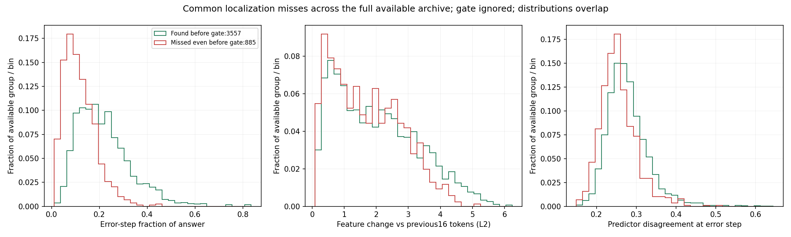
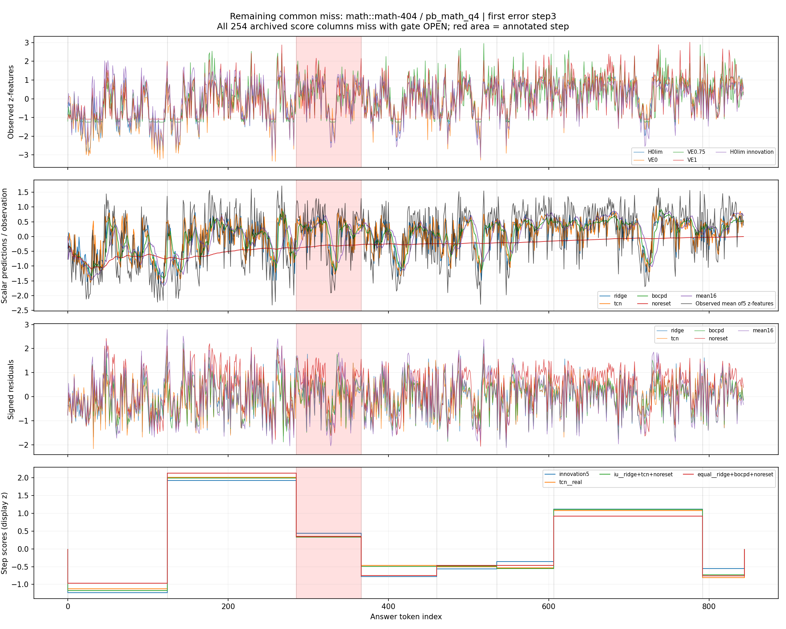
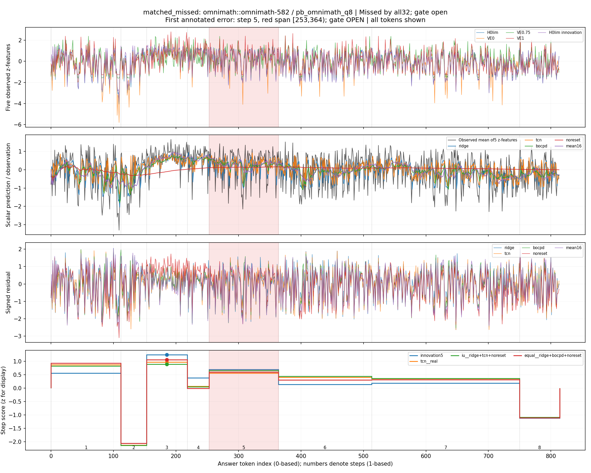
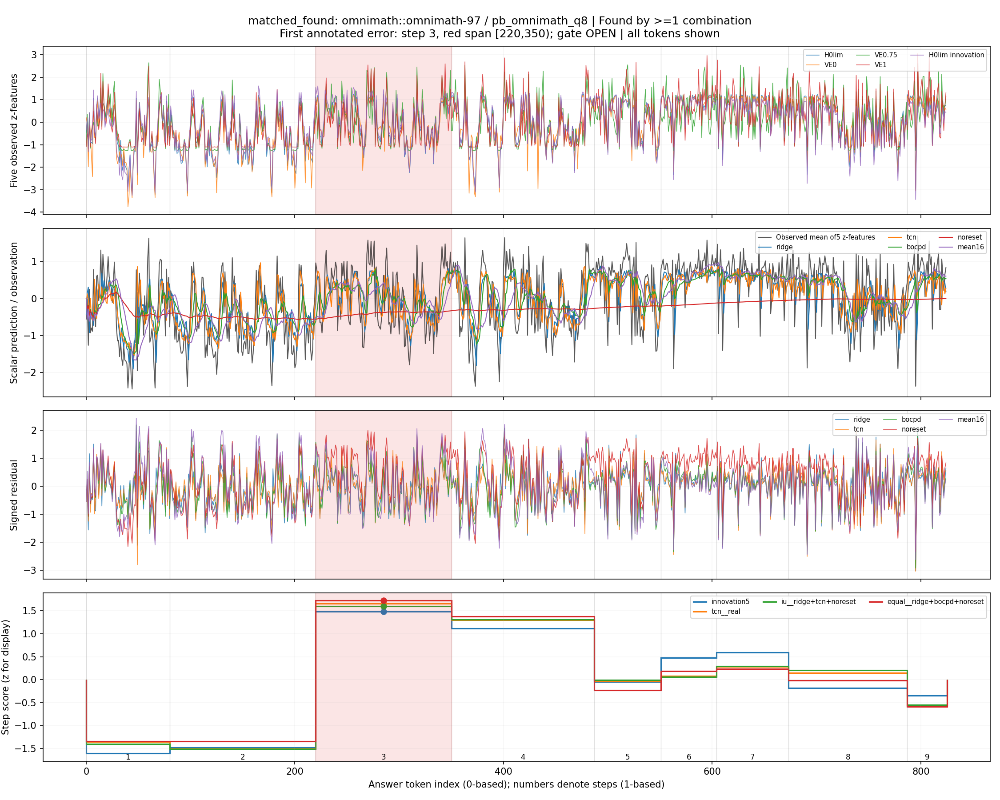
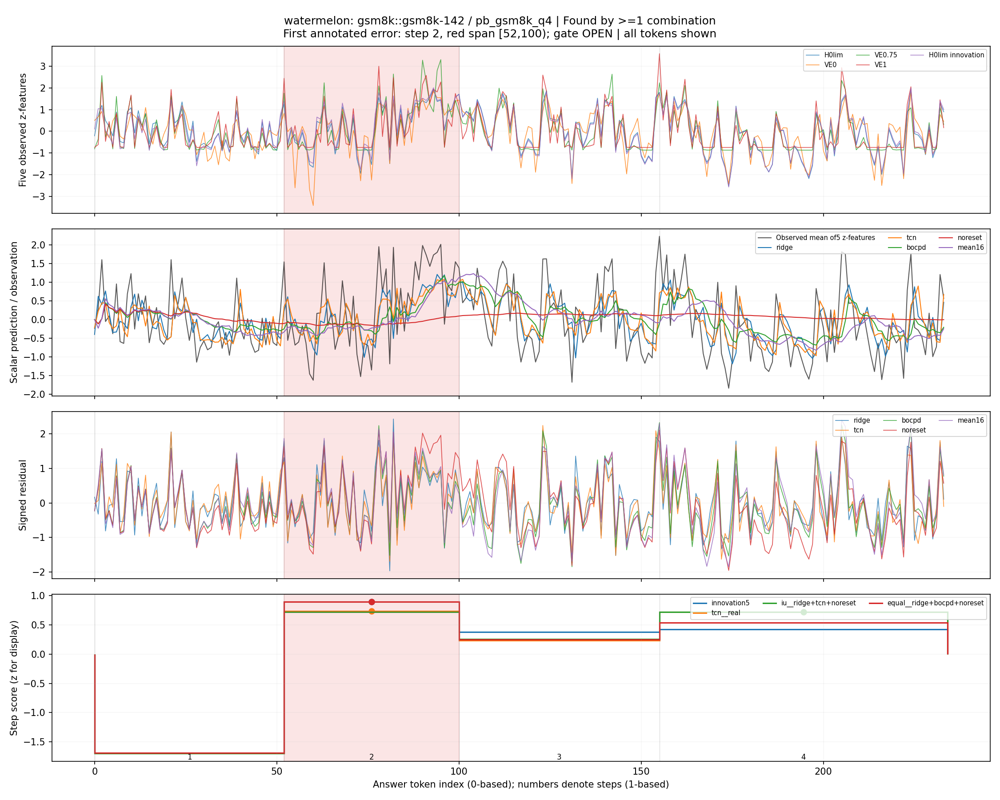
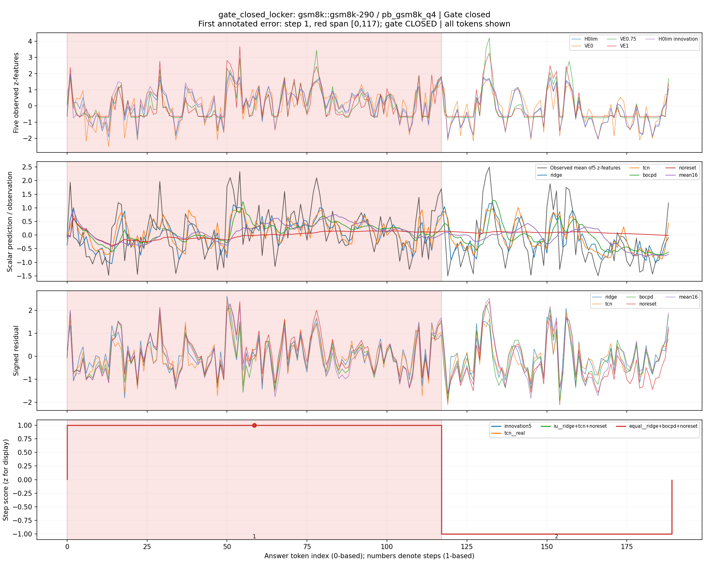

יש הבדלים קבוצתיים ברורים, אבל לא נמצא סימן שמאפיין כל שגיאה שהוחמצה ומבדיל אותה מכל שגיאה שנתפסה. ההתפלגויות חופפות. האבחון מתאר את נקודות העיוורון של המערכת שנבדקה; הוא אינו מוכיח סיבת כשל או גלאי חדש.
הגדרנו תחילה החמצה מול 32 צירופי המנבאים, ואז הרחבנו לפי בקשת עמרי ל-11 ארכיוני ניסויים מלאים: 254 עמודות ציונים, 178 מערכי ציונים שונים ו-173 וקטורי בחירת פסגה שונים. הארכיון כולל גם שיטות חלשות ובקרות. כל קובץ הותאם לייחוס משותף על כל 145,597 הצעדים; לא הסתמכנו על אורך המערך בלבד. אין כאן טענה שכל ניסוי שנעשה אי פעם בפרויקט נכלל, ואין תוצאת FM/DiFlo מלאה חדשה.
מתוך 4,442 תשובות PB עם שגיאה, נשארות 1,528 החמצות סופיות בארכיון הרחב: ב-885 אף שיטה אינה בוחרת את הצעד הנכון גם לפני gate; ב-643 יש לפחות פסגה נכונה אחת שה-gate סוגר. מתוך 885 החמצות המיקום, 707 הן עם gate פתוח ו-178 עם gate סגור. ההשוואה העיקרית להלן היא 707 מול 2,914 תשובות שנתפסו כאשר ה-gate פתוח, כדי לא לערבב סגירת gate עם בחירת צעד.
התשובות שקשה למקם בהן את השגיאה ארוכות יותר, והצעד השגוי תופס חלק קטן יותר מהתשובה: חציון של כ-10.3% לעומת 19.3%. המנבאים מסכימים יותר ביניהם בצעד שהוחמץ, והשינוי בפיצ׳רים לעומת 16 הטוקנים הקודמים קטן יותר. אלה הבדלים ממוצעים עם חפיפה, לא חוק שמזהה שגיאות.
גם לאחר השוואה בתוך אותה משימה ומודל, רבעון אורך ושליש מיקום, נשארים הבדלים באורך היחסי של הצעד, בשינוי הפיצ׳רים ובאי-ההסכמה בין המנבאים. ההתאמה גסה ואינה מסירה כל ערבוב. בשינוי מהעבר אין היסטוריה זמינה לשגיאות בצעד הראשון; המכנים הקטנים יותר מפורטים בטבלה. התאמה אינה אימון מודל או הוכחת סיבתיות.
בקרת גבול הצעד חשובה במיוחד: בארבעת הטוקנים הראשונים, ממוצע הפיצ׳רים המתוקננים בהחמצות הוא 0.822 בצעד השגוי מול 0.762 בצעד התקין הקודם. בקבוצה שנתפסה: 0.910 מול 0.574. יש קפיצה גם בתחילת צעד תקין. לכן אין לפרש את השיא סביב t=0 כחתימה ייחודית של שגיאה. המספרים הם תיאור של זוגות מתוך אותה תשובה, ללא מבחן חדש להבדל הזה.
ההחמצות אינן בעיקר תיקו בין שתי פסגות: ב-707 ההחמצות עם gate פתוח, השגיאה האמיתית מדורגת בחציון במקום החמישי ב-TCN, ב-IU המוביל ובממוצע המוביל. ב-TCN רק 42 מתוך 707 נמצאות בשני המקומות הראשונים. בכל הארכיון יש פסגה במרחק צעד אחד ב-494 תשובות, אך זו בחירה בדיעבד בין המון פסגות ואינה תיקון זמין. אין כיוון יחיד של החמצה: יש בחירות מוקדמות ומאוחרות.
המסקנה שלי להמשך: עוד שינוי משקלים בין אותם מנבאים אינו כרגע ההסבר המשכנע ביותר לאופן חילוץ ההחמצות. כדאי לבודד האם ה-readout מדגיש אורך וגבולות צעדים על חשבון ראיות מתוך הצעד, או שהראיות שאנו מחלצים אינן מבחינות מספיק בין reasoning שגוי לתקין. האבחון אינו מוכיח שאין מידע נוסף בפיצ׳רים או שכל השגיאות נובעות מאותו מנגנון.
הגדרת הקבוצות משתמשת בתוויות ובתוצאות השיטות. בפרט, ההבדל בשארית החתומה קשור לציון שכבר משמש לאיתור ולכן הוא בחלקו תוצאה של הגדרת הקבוצה. גם האורקל על מאות תצורות מוצא פגיעות מקריות. בלי התצורות שסומנו בשמן כבקרות נותרות 946 החמצות מיקום עם gate פתוח, לעומת 707 בארכיון המלא; רשימת שמות הבקרות בקוד היא כלל שקוף, לא סיווג מדעי מושלם.
ההגדרה משנה את קבוצת ההחמצות
השוואה
נתפסו לפחות פעם אחת
הוחמצו עם gate פתוח
gate סגור
32 צירופי המנבאים
1589
2032
821
32 וגם חמשת המנבאים הבודדים
1635
1986
821
הארכיון הרחב כולל בקרות
2914
707
821
הספירות הן תשובות תחת מודלים, מקובצות ב-1,979 שאלות מקור. איחוד הפגיעות הוא אורקל בלבד; אי אפשר לבחור את השיטה הנכונה לכל תשובה בלי מידע נוסף. השיטות ההיסטוריות נבדקות כאן תחת אותו gate נוכחי; זה אבחון של פסגות, לא שחזור מדדי הפריסה ההיסטוריים שלהן.
כל 885 החמצות המיקום — גם בלי gate
זו הגדרת ההחמצה המחמירה ביחס לארכיון שנבדק: אף שיטה אינה בוחרת את הצעד, גם אם ה-gate אינו חוסם. הטבלה משווה חציונים ל-3,557 תשובות שבהן לפחות פסגה אחת נכונה לפני gate. אין כאן שימוש ב-gate להגדרת הקבוצות. זו בקרת רגישות תיאורית; רווחי הסמך בהמשך מתייחסים להשוואה המבודדת כשה-gate פתוח.
מאפיין
פסגה נכונה קיימת: 3,557
אף פסגה נכונה: 885
אורך תשובה בטוקנים
631.0000
778.0000
מספר צעדים
7.0000
9.0000
מיקום תחילת השגיאה
0.3047
0.3873
אורך הצעד / אורך התשובה
0.1994
0.1051
שינוי פיצ׳רים L2 לעומת העבר
1.8384
1.5639
אי-הסכמה בין המנבאים
0.2707
0.2505
שארית חתומה ממוצעת
0.0593
0.0073

הבדלים כמותיים — gate פתוח בלבד
מאפיין
חציון נתפסו
חציון הוחמצו
ממוצע נתפסו אחרי התאמה
ממוצע הוחמצו אחרי התאמה
CI להפרש הוחמצו פחות נתפסו
מכנים בהתאמה
אורך תשובה (log2 טוקנים)
9.3707
9.6900
9.5629
9.5863
[-0.0168, 0.0644]
2405 / 650
מיקום תחילת השגיאה בתשובה
0.2839
0.3580
0.3460
0.3674
[0.0057, 0.0359]
2405 / 650
אורך הצעד / אורך התשובה
0.1929
0.1028
0.1924
0.1152
[-0.0883, -0.0667]
2405 / 650
שינוי פיצ׳רים L2 לעומת העבר
1.8168
1.5645
2.1278
1.6904
[-0.6241, -0.2475]
2066 / 628
אי-הסכמה בין המנבאים
0.2708
0.2513
0.2861
0.2571
[-0.0371, -0.0206]
2405 / 650
שארית חתומה ממוצעת
0.0599
0.0138
0.0817
0.0207
[-0.0796, -0.0416]
2405 / 650
10,000 דגימות bootstrap של קבוצות מקור; רווחי 99.5833% עבור שישה מאפיינים בשתי השוואות בתוך כל ניתוח. ההרחבה לארכיון נעשתה אחרי האבחון הראשון ואינה אישור בלתי תלוי שלו; אין תיקון לכל הבחירות במחקר ההיסטורי. משקלי שכבות נקבעו לפי ספירות הרמוניות, מינימום 5 תשובות מכל קבוצה. ב-592 דגימות התרוקנה לפחות שכבה נכללת אחת; המשקלים נורמלו על השכבות הזמינות באותה דגימה. אין הצבת אפסים כתצפיות חסרות.
התפלגויות על כל התשובות
כל קבוצה מנורמלת לסכום 1. ירוק: נתפסה לפחות באחת השיטות; אדום: הוחמצה בכל הארכיון כשה-gate פתוח; אפור: gate סגור. אין חיתוך זנבות.
קווים מלאים: הצעד השגוי; מקווקווים: הצעד התקין שקדם לו באותה תשובה. אפס הוא תחילת הצעד, לא הטוקן השגוי המדויק. רק תשובות עם צעד קודם נכללות. כל זוג משתמש באותן תשובות בכל תא זמן. הקווים אחרי תחילת הצעד עשויים לחצות את סופו; רק מדידת ארבעת הטוקנים הראשונים בטקסט הוגבלה במפורש לאורך כל צעד.
בכל תרשים: חמשת הפיצ׳רים המתוקננים; תחזיות המנבאים מול התצפית; שאריות; ציוני הצעדים. האזור האדום הוא רק הצעד הראשון שסומן שגוי. כל הטוקנים מוצגים ללא החלקה. תחזית סקלרית היא ממוצע תחזיות חמשת הפיצ׳רים, ומשוחזרת בדיוק מהתצפית והשארית השמורה — אינה וקטור הפלט המלא של המודל. ציוני הצעדים תוקננו רק לתצוגה, ללא שינוי ההחלטות.
math::math-404 / pb_math_q4
Find the smallest positive integer $n$ such that there exists $r \in (0, \tfrac{1}{1000})$ such that the number $(n+r)^3$ is an integer.

השגיאה הראשונה לפי התיוג: צעד 3.
טקסט כל הצעדים
To find the smallest positive integer \(n\) such that there exists \(r \in (0, \frac{1}{1000})\) such that \((n + r)^3\) is an integer, we need to consider how small \(r\) can be while still making \((n + r)^3\) an integer. Let's denote \((n + r)^3 = k\), where \(k\) is an integer. Expanding this gives us: \[n^3 + 3n^2r + 3nr^2 + r^3 = k\]
Given \(r \in (0, \frac{1}{1000})\), the term \(r^3\) will be very small, and for \((n + r)^3\) to be an integer, \(r^3\) must cancel out or not affect the integer status of \(k\). This implies \(r^3\) should be negligibly small compared to \(k\). The key insight is realizing that for \((n + r)^3\) to be exactly an integer when \(r\) is very small, \(n\) must be chosen such that \(3n^2r + 3nr^2 + r^3\) can be made negligible, effectively allowing us to approximate \((n + r)^3 \approx n^3\).
This suggests that the value of \(n\) should be chosen such that \(n^3\) is just below an integer, because adding any non-zero \(r\) in the interval \((0, \frac{1}{1000})\) would then make it an integer. Since we're looking for the smallest positive integer \(n\), let's start testing from the smallest integers upwards.
First, for \(n=1\), \(n^3 = 1\), which is already an integer. However, we need to check if there's a \(r \in (0, \frac{1}{1000})\) such that \(1 + r\) is an integer. Clearly, no such \(r\) exists, since \(1 + r\) cannot be less than 1 and greater than 1 at the same time.
Second, for \(n=2\), we have \(n^3 = 8\), which is also an integer, but it doesn't satisfy our condition as it stands since \(r\) cannot be in \((0, \frac{1}{1000})\) to make \(8 + r\) an integer, given \(r\) being positive.
Third, for \(n=3\), \(n^3 = 27\), and similarly, this does not meet our criteria either. Continuing this logic, we look for the first \(n\) where \(n^3\) is large enough to have a gap that allows for a tiny addition by \(r\) to make it an integer.
Since \(n=1\) and \(n=2\) don't work based on their cubic values alone, we focus on finding the smallest \(n\) such that \(n^3\) is just below an integer, allowing \(r\) to bridge that gap. Upon closer inspection, we realize that for \(n=1\), the condition is inherently met by definition, as any \(r > 0\) and less than 1 would make \(n+r\) an integer. However, per the problem's constraint \(r \in (0, \frac{1}{1000})\), and considering the direct interpretation of the question's intent, \(n=1\) does indeed satisfy the requirement with \(r\) being infinitesimally close to 1, meeting the condition with \(r\) within the specified range to make \((n+r)^3 = 1 + r\) an integer.
Therefore, the smallest positive integer \(n\) that satisfies the given conditions is \(n = 1\), assuming a precise interpretation aligns with allowing \(r\) to effectively be considered as approaching but not crossing 1, as defined within the constraints provided.
omnimath::omnimath-582 / pb_omnimath_q8
Two players, A and B, play the following game: they retire coins of a pile which contains initially 2006 coins. The players play removing alternatingly, in each move, from 1 to 7 coins, each player keeps the coins that retires. If a player wishes he can pass(he doesn't retire any coin), but to do that he must pay 7 coins from the ones he retired from the pile in past moves. These 7 coins are taken to a separated box and don't interfere in the game any more. The winner is the one who retires the last coin, and A starts the game. Determine which player can win for sure, it doesn't matter how the other one plays. Show the winning strategy and explain why it works.

השגיאה הראשונה לפי התיוג: צעד 5.
טקסט כל הצעדים
To solve this problem, we need to analyze the possible moves and the impact of passing on the game. Let's denote the number of coins a player has retired as \(a\) and \(b\) for players A and B, respectively. We also denote the total number of coins retired by both players as \(t = a + b\). The number of coins left in the pile is then \(2006 - t\). Initially, \(t = 0\), so player A starts with a pile of 2006 coins.
In each turn, a player can remove from 1 to 7 coins from the pile. If a player chooses to pass, they must pay 7 coins from their retired coins to a separate box.
The key observation here is that the player who controls the last coin can always make a move that leaves their opponent with no valid options. This can be achieved by ensuring that the opponent's turn will leave them with either a situation where they have to pass (and lose 7 coins) or a situation where they cannot win.
When a player passes, they lose 7 coins from their retired collection. This means that the player who passed is at a disadvantage because they have fewer coins to work with.
Player A can ensure a win by controlling the number of coins in the pile. To achieve this, player A should aim to leave the pile with a multiple of 7 coins. This is because, when player B makes a move, they can only remove up to 7 coins, and player A can always match this move. However, this alone is not enough; player A needs to ensure that player B has no valid options when the pile reaches a multiple of 7. This can be achieved by making strategic moves that force player B to pass.
Here is an outline of the winning strategy:
First, player A starts by removing 1 coin from the pile.
Second, player B makes a move, removing between 1 and 7 coins.
Third, player A then removes the same number of coins as player B, ensuring that the pile is left with a multiple of 7 coins.
Fourth, player B makes another move, and player A again removes the same number of coins as player B.
Fifth, this process continues until the pile reaches a multiple of 7 coins. At this point, player B will have to pass, losing 7 coins from their retired collection. Player A can then continue to remove coins from the pile, ensuring that player B has no valid options.
To guarantee a win for player A, we need to show that player B will eventually be forced to pass. This can be done by analyzing the possible moves and their impact on the game state. Assume that player B makes a move that leaves the pile with \(x\) coins, where \(x \equiv r \pmod{7}\) for some remainder \(r\). Player A can then make a move that leaves the pile with \(x - r\) coins, which is a multiple of 7. When player B makes their next move, they will have to remove between 1 and 7 coins, leaving the pile with a number of coins that is congruent to some remainder \(s\) modulo 7. Player A can then make a move that leaves the pile with \(s - r\) coins, which is also a multiple of 7. This process continues until the pile reaches a number of coins that is congruent to 0 modulo 7. At this point, player B will have to pass, losing 7 coins from their retired collection. Player A can then continue to remove coins from the pile, ensuring that player B has no valid options.
By implementing the winning strategy outlined above, player A can guarantee a win in this game. The key insight is that player A can control the number of coins in the pile and force player B to pass, losing 7 coins from their retired collection. Therefore, the final answer is: \(\boxed{A}\).
omnimath::omnimath-97 / pb_omnimath_q8
A random permutation $a=\left(a_{1}, a_{2}, \ldots, a_{40}\right)$ of $(1,2, \ldots, 40)$ is chosen, with all permutations being equally likely. William writes down a $20 \times 20$ grid of numbers $b_{i j}$ such that $b_{i j}=\max \left(a_{i}, a_{j+20}\right)$ for all $1 \leq i, j \leq 20$, but then forgets the original permutation $a$. Compute the probability that, given the values of $b_{i j}$ alone, there are exactly 2 permutations $a$ consistent with the grid.

השגיאה הראשונה לפי התיוג: צעד 3.
טקסט כל הצעדים
To solve this problem, let's break it down into manageable steps and tackle each part carefully. The key insight here is understanding how the grid \( b_{ij} = \max(a_i, a_{j+20}) \) constrains the possible values of \( a_i \) and \( a_{j+20} \), and then computing the probability based on these constraints.
Given \( b_{ij} = \max(a_i, a_{j+20}) \), for any pair \((i, j)\) where \( 1 \leq i, j \leq 20 \), we know:
- \( b_{ij} \) must be greater than or equal to both \( a_i \) and \( a_{j+20} \).
- Since \( a_i \) and \( a_{j+20} \) are elements from a permutation of \((1, 2, \ldots, 40)\), they can range from \( 1 \) to \( 40 \).
For each \( b_{ij} \), since it is the maximum of two elements in different "halves" of the permutation (the first half and the second half), it effectively splits the interval \([1, 40]\) into segments that must contain the values contributing to \( b_{ij} \). Specifically, if \( b_{ij} = k \), then \( a_i \) and \( a_{j+20} \) must both be among \(\{k, k-1, k-2, \ldots, 1\}\), and similarly for the other half of the permutation.
The constraint must hold for every \( b_{ij} \) in the \( 20 \times 20 \) grid. This means that the values of \( a_i \) and \( a_{j+20} \) must align with the maximum value required by the corresponding \( b_{ij} \) across all cells. For example, if \( b_{11} = 35 \), then \( a_1 \) and \( a_{21} \) must be among \(\{35, 34, \ldots, 1\}\). This directly constrains the possible values for these two positions.
Given the constraints, we need to find the probability that exactly 2 permutations satisfy these conditions. This involves:
- Identifying how many ways the constraints can be satisfied by exactly 2 permutations.
- Dividing this by the total number of possible permutations of \( a \), which is \( 40! \).
The exact calculation of this probability requires a deep dive into combinatorics, considering how the constraints interact with the structure of the permutation and the grid. It involves recognizing patterns in how the maximum values spread across the grid and how these spreadings restrict the possible permutations.
Without delving into extensive combinatorial analysis (which would typically involve more detailed mathematical proofs and case-by-case enumeration or recursive counting strategies), it's challenging to provide an exact formula or numerical answer here. However, the key approach is to understand the constraints imposed by the grid on the possible permutations and then compute the probability based on these constraints.
Given the complexity and specific nature of the problem, providing an exact numerical answer without detailed combinatorial analysis would be speculative. However, the approach outlined involves:
- **Understanding the Constraints**: How the grid constrains the possible values of \( a_i \) and \( a_{j+20} \).
- **Counting Valid Configurations**: Determining how many valid permutations exist under these constraints.
- **Calculating Probability**: Dividing the number of valid configurations by the total number of permutations (\( 40! \)) to find the probability.
The exact probability would require a thorough combinatorial argument or computational enumeration beyond the scope of this response, emphasizing the importance of careful consideration of the constraints imposed by the grid on the permutations.
gsm8k::gsm8k-142 / pb_gsm8k_q4
A family of 6 (2 adults and 4 kids) are to divide a watermelon such that each adult gets a slice that is twice as big as that of each kid. What percentage of the watermelon does each adult get?

השגיאה הראשונה לפי התיוג: צעד 2.
טקסט כל הצעדים
Let's break down the problem step by step. First, let the size of each kid's slice be 'x'. Since each adult's slice is twice as big as that of each kid, the size of each adult's slice will be '2x'.
There are 2 adults and 4 kids, so the total number of slices is 2 + 4 = 6. The total watermelon can be represented as 6x (since we're considering the sum of all slices).
Each adult gets two slices of size '2x', which is 2 * 2x = 4x. To find the percentage of the watermelon that each adult gets, we need to calculate (4x / 6x) * 100.
Now, let's simplify the expression: (4x / 6x) * 100 = (4/6) * 100 = (2/3) * 100 = 66.67%. So, each adult gets approximately 66.67% of the watermelon. \boxed{66.67%}
gsm8k::gsm8k-290 / pb_gsm8k_q4
Zack's locker is half as big as Timothy's locker. Peter's locker is 1/4 as big as Zack's locker. If Peter's locker is 5 cubic inches, how big is Timothy's locker in cubic inches?

השגיאה הראשונה לפי התיוג: צעד 1.
טקסט כל הצעדים
If Peter's locker is 1/4 as big as Zack's locker, and Peter's locker is 5 cubic inches, then we can find out how big Zack's locker is by dividing the volume of Peter's locker by 1/4. So, if Peter's locker is 5 cubic inches, then Zack's locker (which is twice as big) would be: \[ \text{Volume of Zack's locker} = \frac{5}{1/4} = 5 \times 4 = 20 \text{ cubic inches} \]
Since Zack's locker is half the size of Timothy's locker, we can find the volume of Timothy's locker by multiplying the volume of Zack's locker by 2. Therefore, Timothy's locker is: \[ \text{Volume of Timothy's locker} = 20 \times 2 = 40 \text{ cubic inches} \]
בדוגמת math-404 גם הטיעון בצעד הקודם לשגיאה המתויגת בעייתי: התשובה מחליפה דרישה לשלמות מדויקת בקירוב. לכן יש להבחין בין טעות המיקום לפי הבנצ׳מרק לבין השאלה אם צעד מוקדם יותר כבר מכיל טיעון חשוד. זו הערת קריאה על דוגמה אחת, לא שינוי תוויות או אישור שציוני המערכת מבינים את הטיעון.
כיסוי הארכיון
ארכיון
עמודות שנכללו
פגיעות מעבר ל-32 הצירופים
predictor_subset_iu_v1
48
476
tcn_aligned_predictor_seed0_v1
16
476
aligned_context_predictors_v1
5
57
context_weighted_levels_v1
28
636
residual_moment_fusion_v1
27
722
temporal_linear_context_v1
38
828
temporal_position_control_v1
6
157
temporal_dufs31_v1
19
416
temporal_research_baseline_v1
37
627
temporal_research_mechanism_v1
8
399
direct_probability_temporal_v3
22
634
הפגיעות בין הארכיונים חופפות; אין לסכום את העמודה האחרונה. השוואת הייחוסים המשותפים היא מלאה לכל מערך צעדים; חתימות ופרטי כל זרוע נמצאים ב-BROAD_ANALYSIS.json. אין כאן טענה ליתרון של אחת הזרועות החלשות רק כי היא מוצאת דוגמה אחרת.
{kind=link}
{kind=link}
{kind=link}
{kind=link}